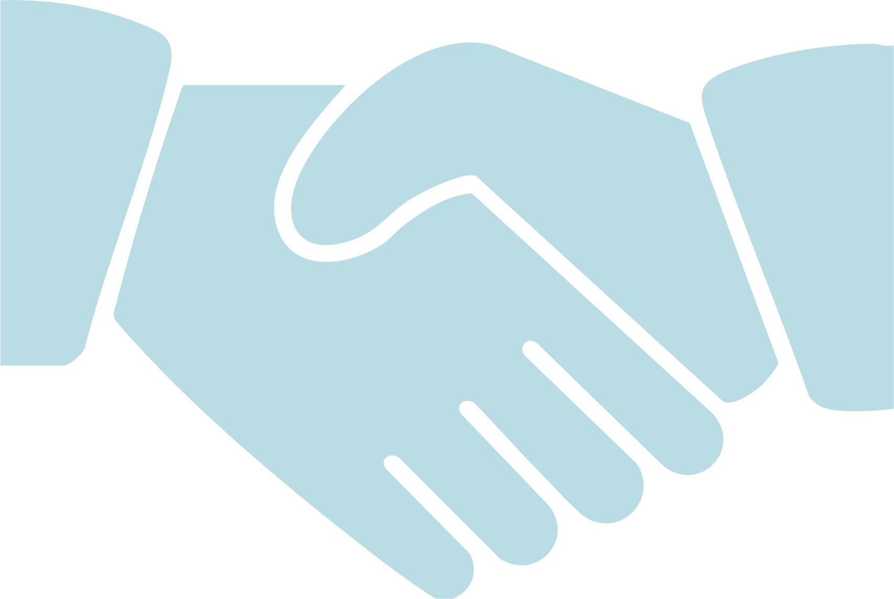
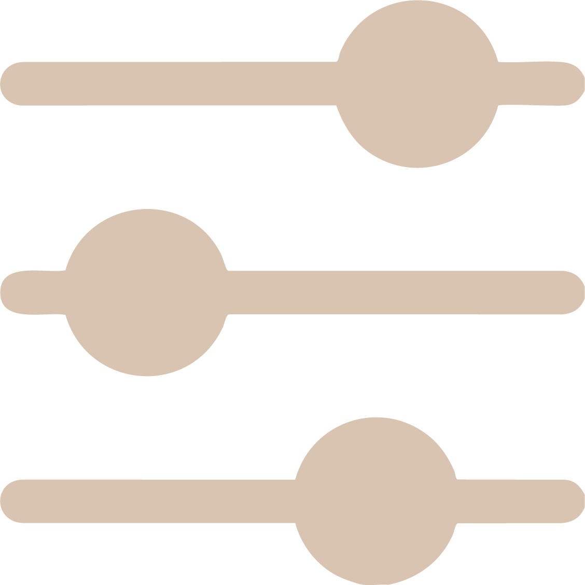

Le processus créatif
Chaque projet est unique, mais ma méthode reste la même : un processus structuré qui allie écoute, exploration et collaboration.

Discussion & briefOn échange autour de vos besoins, de vos valeurs, du public visé, ainsi que votre vision artistique, afin de bien cerner l’univers du projet. Il est possible que je vous communique un fichier à remplir qui permet de vous aider dans votre réfléxion créative, en fonction de vos besoins.
Recherche & inspiration
Je prépare selon vos besoins un moodboard e/ou des croquis préliminaires pour définir la direction artistique avec vous.
Création & propositions
Développement de concepts visuels et présentation de pistes créatives adaptées à vos attentes.

AjustementsNous affinons ensemble le projet grâce à vos retours et itérations. Cette étape peut prendre autant de temps que vous avez besoin pour achever LE résultat désiré.
Livraison & suivi
Remise des fichiers finaux et accompagnement éventuel pour vos déclinaisons futures. Remise des fichiers dès réception du paiement.